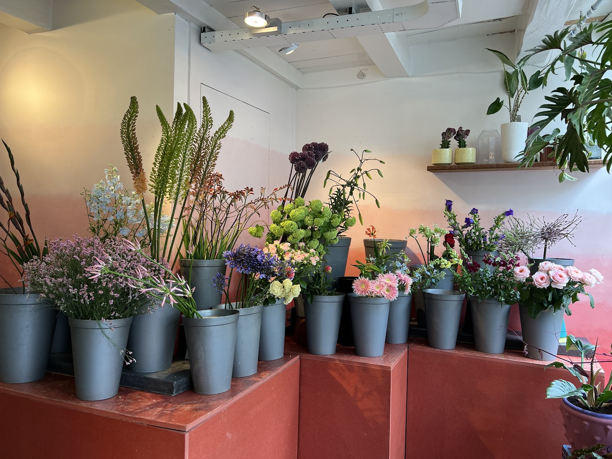
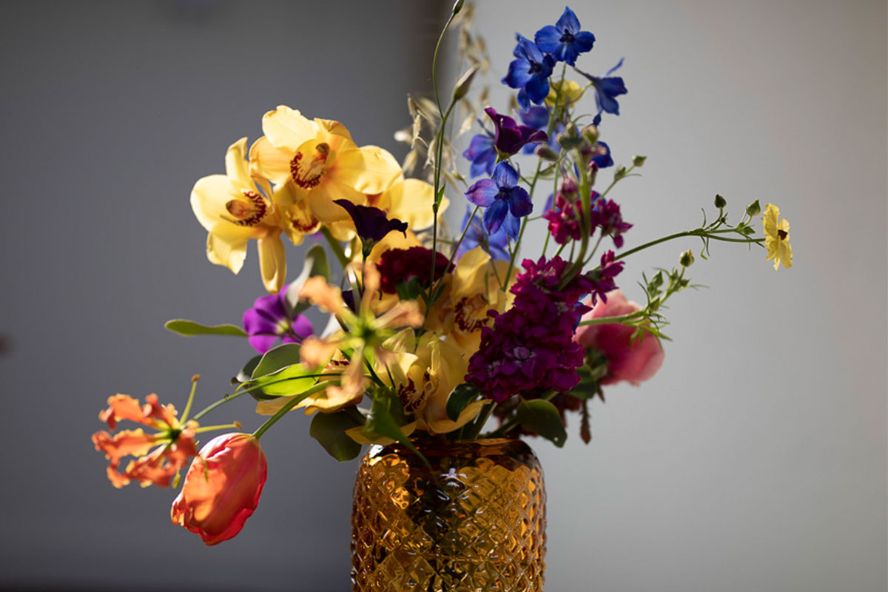
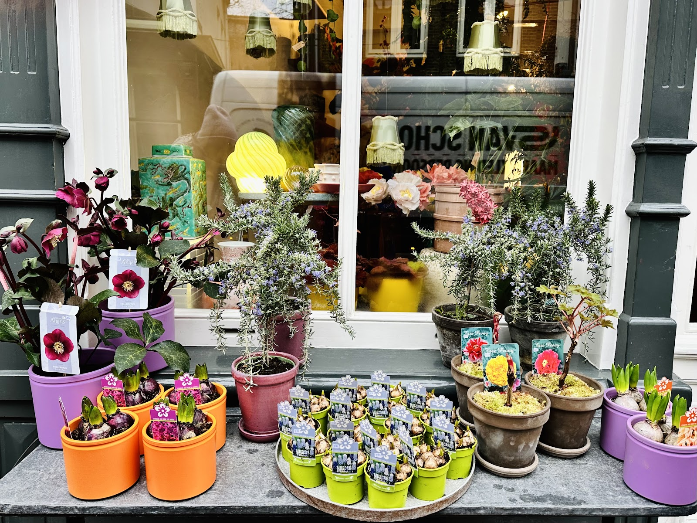
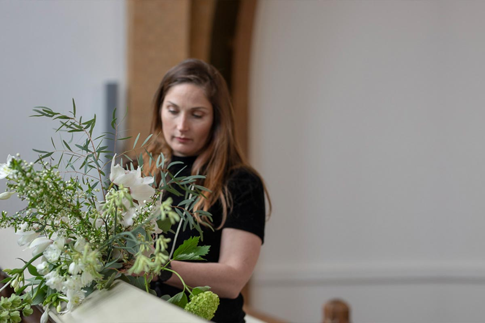
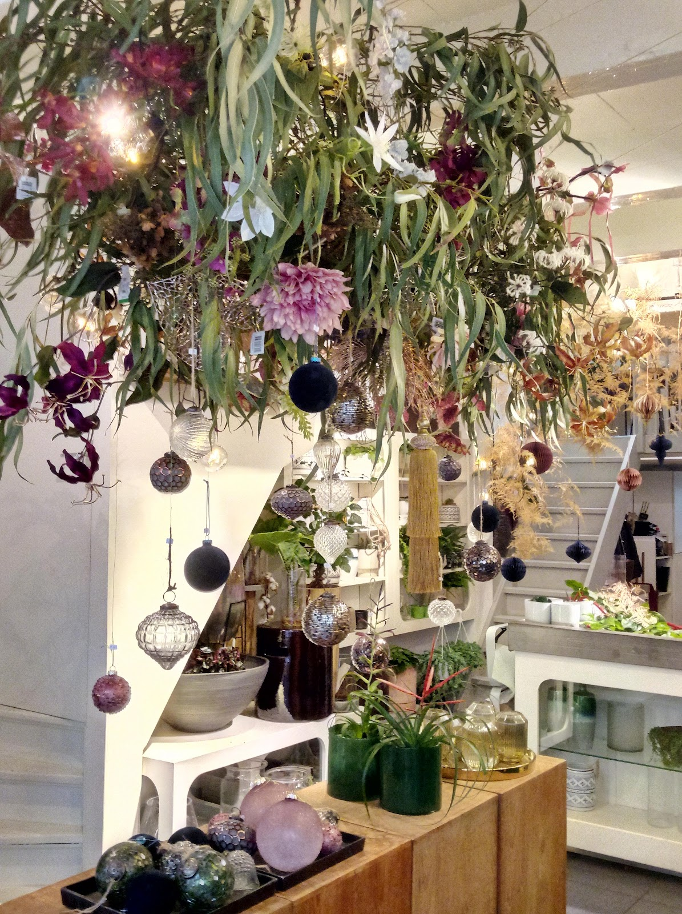
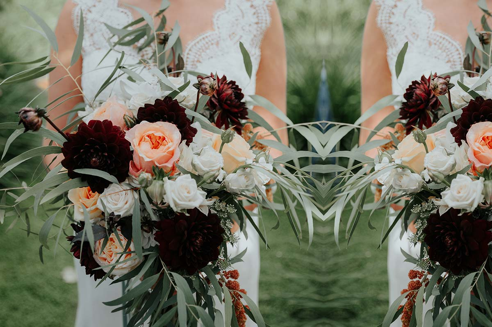
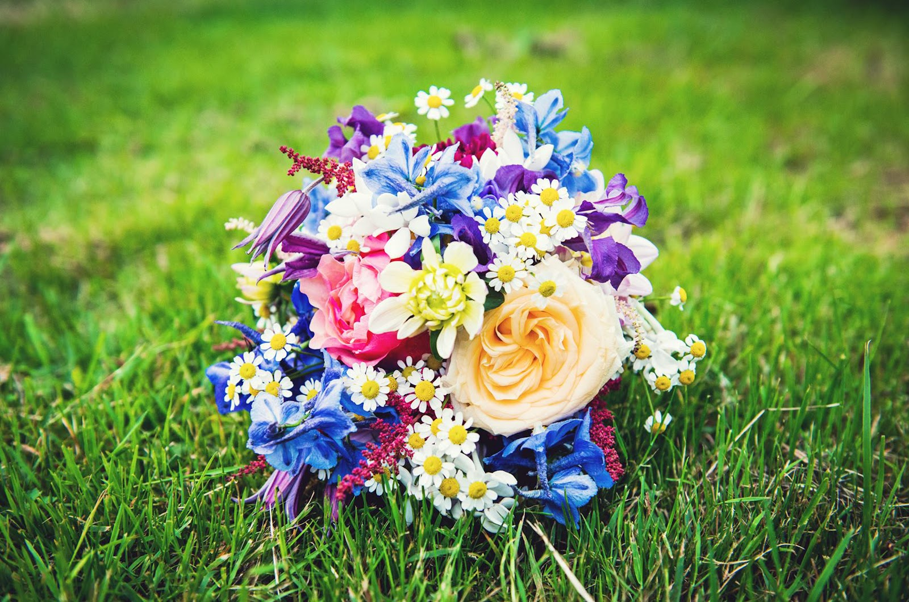
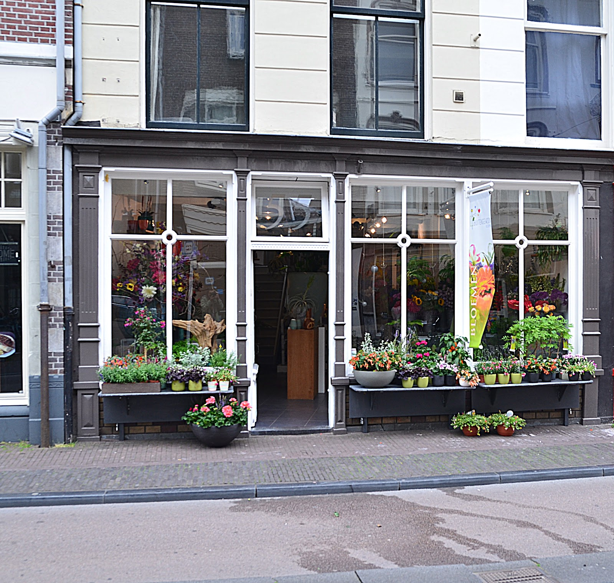
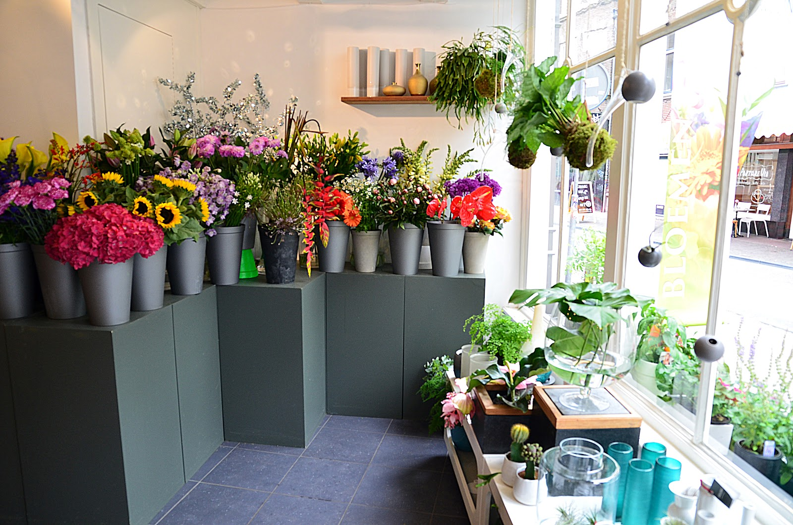
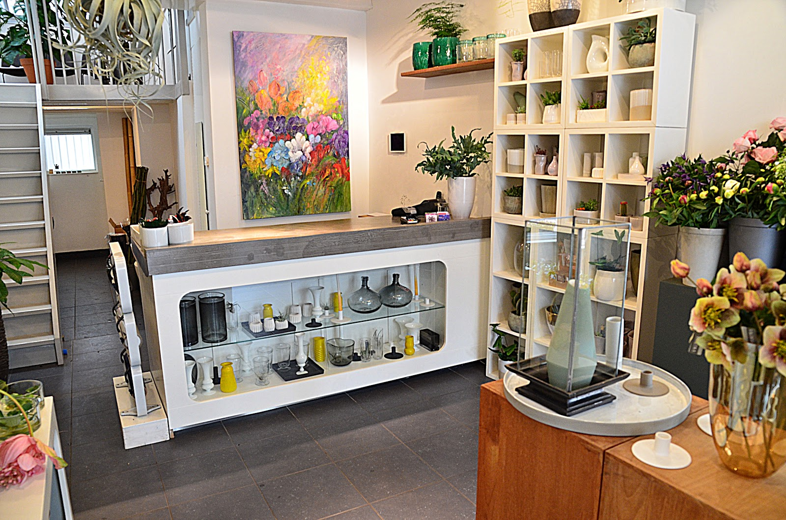

Boeketten
Graag zoeken we samen met u naar niet zomaar een boeket. Seizoensgebonden en speels, gebonden voor een verjaardag, een bedankje of gewoon omdat het kan.
Bel om te bestellenBloemist aan de Voorstraat, Utrecht
Seizoensbloemen, bijzondere planten en bruidswerk, met de hand gebonden in onze winkel. Vertel wat u zoekt, wij denken graag mee.
4,7 op Google, uit 71 reviews

Kies zelf een kleurenschema en de grootte van het boeket, of laat ons creatief aan de slag gaan. Uw tekst schrijven wij op het kaartje.
Is het al na tienen? Bel ons even, dan kijken we wat er nog kan.
We zijn helemaal weg van bloemen. Met wat het seizoen brengt maken we speelse boeketten en arrangementen, zoals u ze nergens anders vindt.

Graag zoeken we samen met u naar niet zomaar een boeket. Seizoensgebonden en speels, gebonden voor een verjaardag, een bedankje of gewoon omdat het kan.
Bel om te bestellenPlanten maken van een huis een thuis. We selecteren de mooiste binnen- en buitenplanten, ook soorten die u niet vaak ziet. Met een ruime keus aan potten vindt u de combinatie die past bij uw ruimte, en we vertellen u graag hoe u ze verzorgt.
Elke week komen er nieuwe planten binnen.


Bloemen voor een afscheid die passen bij wie hij of zij geweest is. Losse bloemen, een boeket, een kistbedekking of aankleding van de ruimte: we stellen samen met u een passend arrangement samen. U bent welkom in de winkel, of bel ons gerust.

Bloemen en planten maken een werkplek prettiger. Ook bij een verjaardag, het afscheid van een collega of een bijzonder event zorgen we voor het groen.
Vraag een offerte aan

Bloemen geven deze dag een gouden randje. We hebben al veel bruidswerk mogen maken, en voor ieder paar weer iets eigens.
Jullie stijl. We horen graag hoe de bruiloft eruit gaat zien en welke bloemen jullie aanspreken.
Wat het seizoen biedt. We kijken welke bloemen er dan zijn en passen alles aan op jullie wensen, ook op de jurk, het pak of andere kleding.
De locatie erbij. In dezelfde sfeer maken we arrangementen voor de trouwlocatie, zodat alles één geheel vormt.
"We hebben een bruidsboeket besteld en zijn ontzettend tevreden. Onze wensen komen er perfect in terug en het is prachtig gebonden! We werden heel goed geholpen en er werd echt met ons meegedacht. Echt een aanrader."
"Buitengewoon Bloemen heeft ons bruidsboeket prachtig verzorgd. Een week of 5 voor de bruiloft heb ik onze ideeën voor het bruidsboeket besproken, verteld wat voor stijl en wat voor bloemen we mooi vonden. Omdat ze werken met seizoensbloemen en lokale bloemen (superduurzaam!) …"
Onze winkel staat in een oud pand aan de Voorstraat, midden in de binnenstad. Binnen staan de verse bloemen in emmers klaar en vindt u planten en potten die het tuincentrum niet heeft.
"Leuke winkel met mooie en bijzondere bloemen. Ik heb er een prachtig boeket laten samenstellen waar de ontvanger nog lang plezier van heeft gehad. Ik heb er ook een mooie plant in pot gekocht. Wil je een apart boeket cadeau doen dan is dit een goed adres!"
"Leuke plek aardig personeel, het is geen specifieke planten winkel maar hebben vaak toch leuke vrassingen die je niet zo in een tuincentrum vind, zoals deze begonia, en ze hebben vaak ook anthurium clarinervum."



Loop binnen, bel of mail. Ook als u iets anders dan bloemen in gedachten heeft: vertel ons wat u zoekt, dan kijken we samen wat er mogelijk is.
Bloemen en inspiratie op Instagram: @buitengewoonbloemen